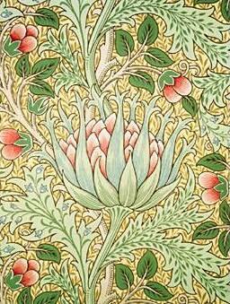

Le mouvement Arts and Crafts
Le Arts and Crafts movement, littéralement « mouvement Arts et artisanats » , est un mouvement artistique réformateur dans les domaines de l'architecture, des arts décoratifs, de la peinture et de la sculpture, né au Royaume-Uni dans les années 1860 et qui se développa durant les années 1880 à 1910, à la fin de l'époque victorienne.
Il peut être considéré comme l'initiateur du Modern style, mouvement "parallèle" anglo-saxon de l'Art nouveau français et belge.
Le mouvement fait écho aux préoccupations d'alors, de ces artistes-artisans devant le progrès : inquiétude, besoin d'individualisation, recherches de véritables valeurs dans un contexte de domination britannique mondiale contestée et de mutations rapides des paysages et des sociétés sous l'impulsion de la révolution industrielle qui a engendré une nouvelle organisation sociale.
Source
